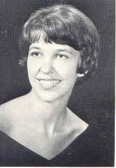
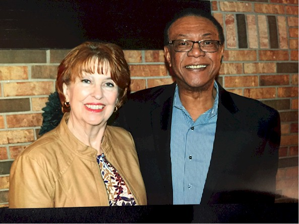
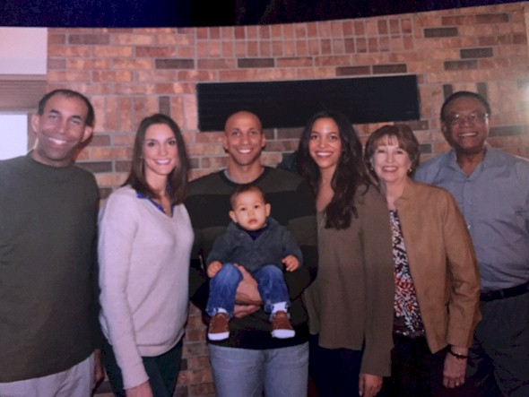
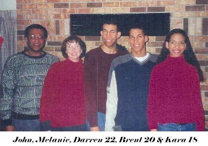
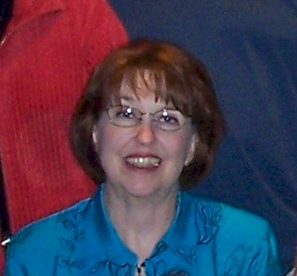
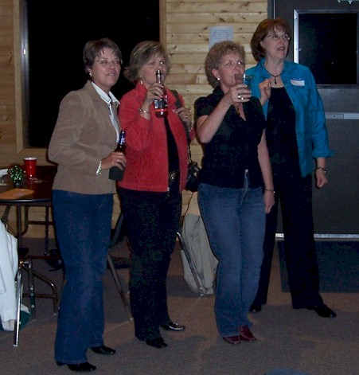

|  1967 |
2012 |
|  2017 - John & Melanie |
 2017 - Family |
|  John, Melanie, Darren 22, Brent 20, Kara 18 |
|
|  2007 - At 40th Class Reunion |
 2007 - Barb, Julie, Davi & Melanie Signing Boone High Fight Song |
Update 2002:
Children: Darren 22, Brent 20, Kara 18
Life History: After graduation, I attended the University of Iowa. I have worked most of the
time since then as a medical technologist in hospital labs. However, for the last 9 years,
I've been employed with R&D Systems in Minneapolis. John and I have been married for 29 years
and have 3 children. Darren is 22 and working, still living at home, although we don't see
much of him. Brent is 20 and starting his 3rd year at U of M, studying mechanical engineering.
He is on the Gopher basketball team, so that is lots of fun for us. Kara is 18 and will be
starting at the U of M majoring in business this fall. I am looking forward to seeing everyone
and hope we have a good turnout!